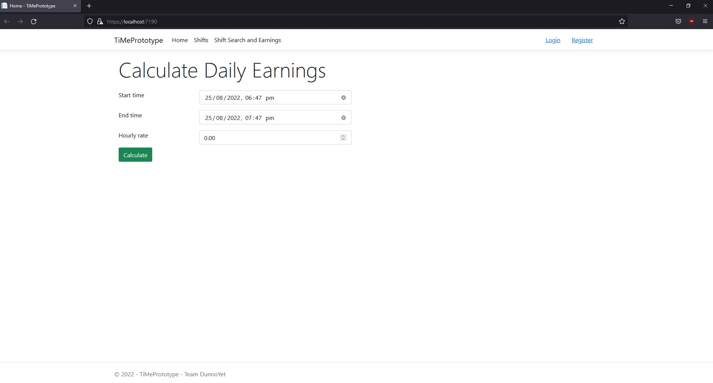
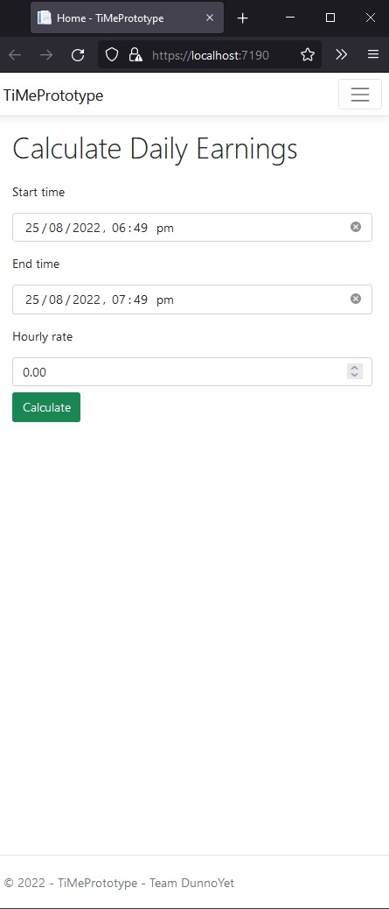
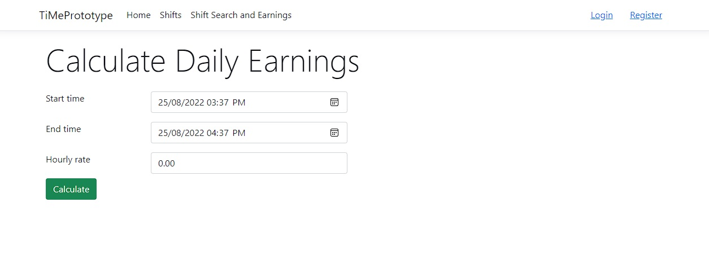
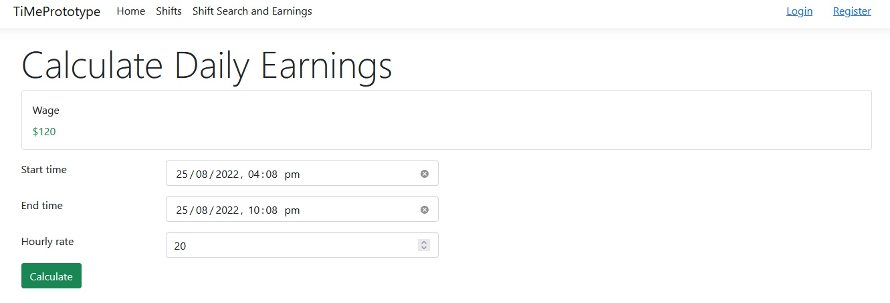
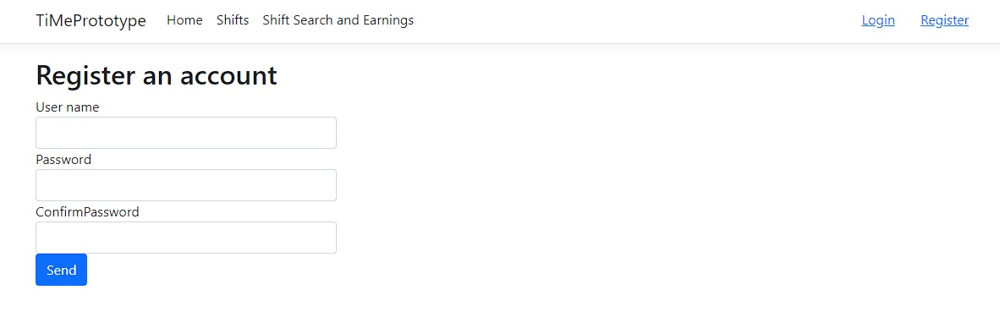
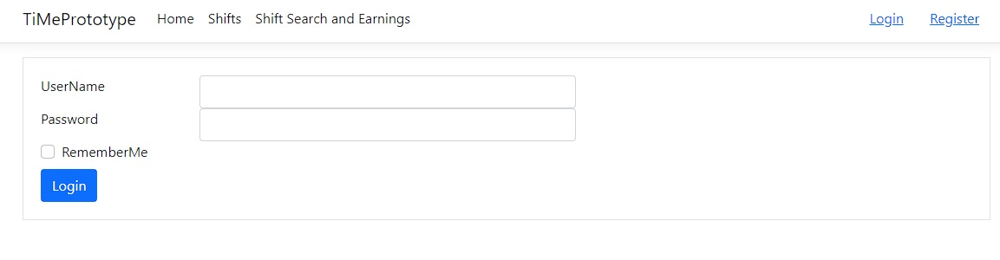
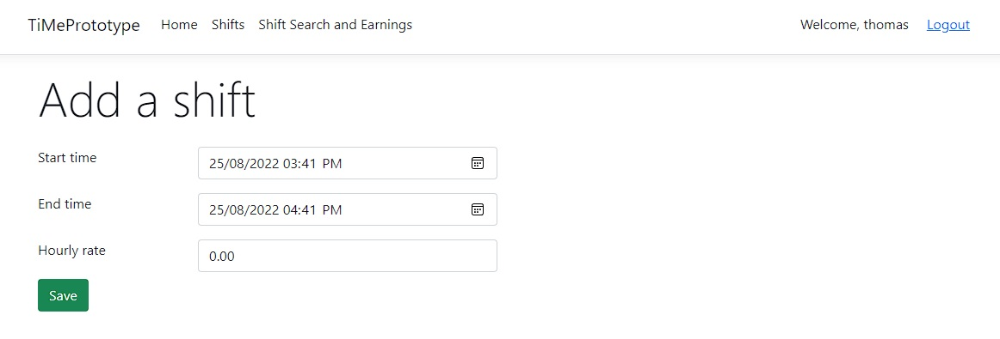
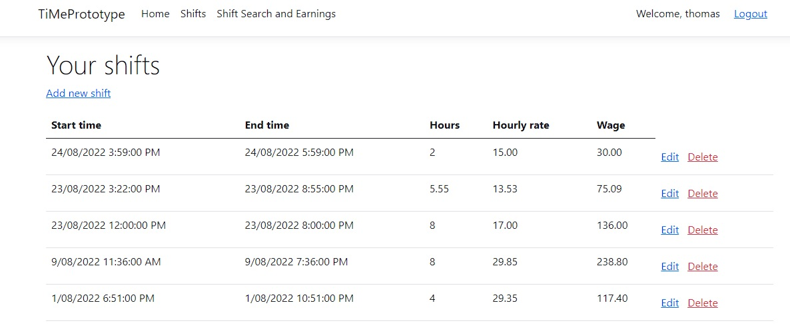
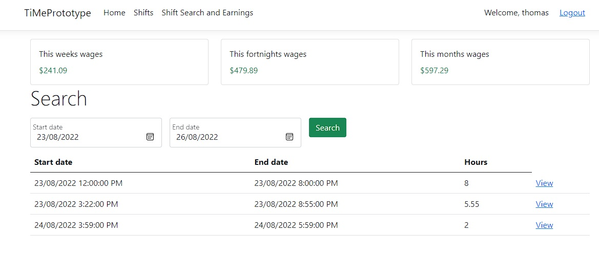

How has it progressed
From a very simple personal use web-based shift tracker, has become a simple, free way for any individual employee or freelance worker to track shift hours, manage a project and calculate by pay rate or rate by project agreement. When choosing a name for the project, the phrase Time Me came to mind, then thinking ‘squeeze that together’ to make TiMe.

Overall, there was not a great deal of planning of the provided services. Most services that will be provided within the project were decided in our first meeting discussing our future project, certain potential features are not intended to be included until after the 15-week plan. The system requirements and production processes were chosen on personal preference and previous knowledge of team members. Following, will discuss the plans we have and progress we have made on the project, also what potential features could be added after the 15-week timeframe.
Progress of the idea: Initially the idea was just to be a single page web delivered time tracker with wage calculator. Intended to record daily, weekly, fortnightly, and ongoing shift data with ability to calculate by a pre-input wage for individual employees. Research into currently available products and services available indicated majority of similar services available were designed for businesses to manage staff, many of these do not allow employees to see their shift data or how much they have earned in the pay period.
Alternatively, there were options specifically for individual employees to enter and track shifts, receive alerts and reminders, and integrate with other calendars, however most of these only available on mobile app, and a majority of those on android only. Web-based available services lacked ability to save and track data, and were very particular with how it calculates, it took time to find the one that made the correct calculation needed. Further, the products and services available to freelance workers was limited, and a majority of what was found were limited to a specific style freelance work. The findings led to a decision to design TiMe to be available for individual employees and freelance workers of any style however is not designed for business use or team management.
Deliverables Progress: Initially, the features we confirmed was a system that allows users to create an account, log in, and enter and save shift data which would calculate by pre-entered wage data and record a running tally of earnings. The wage or pay rate would be entered into its own form and saved. Shift data would be able to be entered manually or by choosing a start and finish time, extending on this, it is intended that in future plans a break time per shift will be implemented.
Further to these features, users can create an account, protected by hashed password authorization, allowing user to enter, save and change data securely. Cookie authentication will be used for prototype, which has been built as a monolithic program alone for purpose of prototype. Users will have access to individual shift, weekly, fortnightly, monthly, and annual shift hours, and calculated wage earnings in those periods. Further, users will have the ability to enter and save upcoming shifts, which can later be edited. All data will also be accessible to download via CVS file. We later decided it would be beneficial to allow one-time use without an account, however data cannot be saved or retrievable using this feature. Alternatively, single shift data can be entered and calculated using this feature, which has now been produced as a prototype, and ready to be deployed.
Moreover, another feature will be added that allows the user to integrate pre-existing calendars (e.g. Google or Outlook calendars), however, this will likely not be implemented until after the 15-week plan. This feature will likely be added after the main features are available on all platforms. A final decision was how to display the recorded data, users will simply be able to search their preferred period of dates which will show data from the shifts within those dates, hours worked and calculated wage for chosen period.
Production Progress: A Web-based application was chosen as the initial availability of the application. The ability to access a web app from any device coupled with the ease of later implementing access to mobile applications was the motivator for this decision. Thomas, with his previous knowledge, designed the basic set-up of the system (see diagram).
It was a unanimous decision to use a cloud service provider to deploy the application, however a decision on which provider we will use would not be decided until later, likely after week 10, once we can get quotes on the services needed for the deliverables included in deployment (Azure, AWS, or Google cloud likely first preferences).
Moreover, Jo, also studying DevOps, learned some processes that would make the production and management more efficient. It was decided the project would be built as microservices, in a container (likely Docker, but will be a later decision due to lack of knowledge), allowing continuous uninterrupted deployment of our application. Building in microservices means each feature of the application is built on its own saved as its own branch in a Git Version control, further it keeps its own database, allowing faster data retrieval. Further it allows continuous integration and continuous delivery, therefore updated with no downtime. All these microservices will be stored within a container allowing easy deployment through cloud services. With Thomas’s previous knowledge and experience, Visual Studio Code was used to write the working code in C#; HTML, CSS, JavaScript and SQL for the prototype of TiMe.
What stage of the plan you are up to
Progress toward the production of the project is further progressed than initially planned. Initially it was believed it would be achievable to provide a prototype of the main feature which consisted of creating *explain how u built main feature*, however, enough time became available to add further main features.
Authentication and Authorization were successfully added using C#’s asp.net core Authentication and Authorization middleware in combination with the use of a SQL database. Users can register for an account, the username and a hashed version of their password is stored, along with an auto generated Identifier. Users who have registered are then able to login and their details are checked against the database, and after successful verification an authentication cookie is created and stored in their browser to be used to check if they are authorised to access each page.
Further, a database to hold the user information and for easy data retrieval of account information and previously entered data. The database was created through C#’s Entity Framework Core (EF Core). EF Core allows for a code first approach, where you define entity models which are then converted into database tables and a schema is generated. This allows for quick and easy prototyping and to write as little SQL code as possible, as just some of the features and benefits EF Core provides.
The most important part of the main feature is ability to save, edit, delete, and retrieve data. This is made possible through the prototypes architecture and use of many different systems and frameworks. A user can access the application through Razor Pages, and when they use a Get or Post method on each page, a call may go out and use the CQRS pattern to handle those requests and commands for a database query. In the case of a request such as Getting a user's shifts, we use a Query Handler to then query the database for that user’s shifts. If a user wishes to add a shift, we create a command handler to send data to the database for storage, this is the same with editing and deleting a shift.
The project is in final stages of web-based main features being completed. The main feature being the first completed, followed by successful completion of Authentication an Authorization. Next was creation of account creation and login features, then leading to the add-on features to the main feature, data entry and manipulation. Finishing with the local database needed to store user data.
Overall, the progression of the project is much further progressed at this stage than we initially believed was possible. This in return would bring forward the features that were anticipated to be implemented outside the 15-week plan. Given this rapid progress, it would be achievable to have chosen a cloud service provider, add in calendar integration and even APIs for mobile and web apps with UI updates and have the application actively deployed and fully functional within the next 10 weeks.
Prototype
The prototype lacks any writing including descriptions, instructions etc as it is just a prototype to prove that the project could be built, to test the features, use it for user testing, find and solve any pain points early in the development of the project. Features are duplicated to an extent and on separate pages at this stage only to prove and test those features. No design has gone into the final user interface planned for production.








